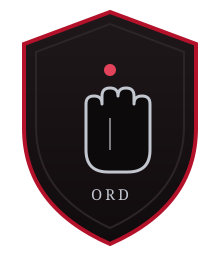

Factions
Powers of Exandria
The crews and consortiums that hunt the Netherdeep's secrets — in the markets of Ank'Harel and the depths beyond. Their crests, seats of power, and the agents the party has met.
The Allegiance of Allsight
Known For Watching the sky — especially the red moon, Ruidus — and reading omens in its light.
A secretive society of seers and astronomers who believe the waking of the Apotheon is written in the heavens. They want the Netherdeep's relics studied, not sold.
Met So Far None yet.
The Consortium
Known For Owning a piece of everything that moves through the city, and most of what moves under it.
A coalition of wealthy interests who treat the Netherdeep as a vault to be cracked. They fund relic-hunters, buy what they bring back, and rarely ask how it was got.
Met So Far None yet.
The Library of the Cobalt Soul
Known For Gathering knowledge and dragging buried truths into the light.
Monastic scholars who hoard secrets not for power but to keep them from those who would misuse them. The deeper history of the Apotheon is exactly their kind of dangerous truth.
Met So Far None yet.

The Hand of Ord
Known For Keeping the peace in the City of Marble — firmly, and without much patience for outsiders.
The disciplined guardians of Ank'Harel. They care little for ancient relics, and a great deal about armed strangers causing trouble in their streets.
Met So Far None yet.